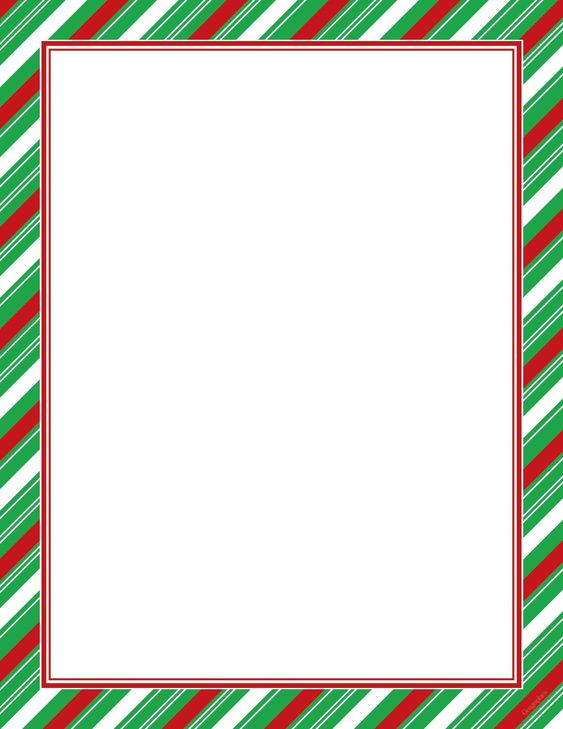

Christmas Holiday
"Christmas is the spirit of giving without a thought of getting. It is happiness because we see joy in people. It is forgetting self and finding time for others. It's discarding the meaningless and stressing the true values."

We’ve put together a versatile slew of free holiday design resources, Christmas recipes, traditions, decorations, carols and so much more.
 Food & Drinks
Food & Drinks
A toast! A toast! Cheers to your health this holiday, with classics like spiked eggnog, mulled wine, candy cane martinis; the list goes on and on-actually why not drink it all in?
 Food & Drinks
Food & Drinks
From gingerbread to gingersnaps, shortbread to sugar cookies, Christmas cookies can make (or bake) the holidays. Get your seasonal fix with our 19 classic treats.
 Food & Drinks
Food & Drinks
All over the world on Christmas day, families and friends sit down together for a delicious Christmas dinner, sharing laughter and stories over a table laden with food and drink.
 Food & Drinks
Food & Drinks
From sweet to salty discover the holiday treats that make the season unforgettable (for dentists at least), and see how much peppermint can you handle this holiday..

By: Felicity Schafer

By: Kathryn Marr

By: Samantha Li
By: Felicity Schafer


Download free Christmas clip art and icons, holiday backgrounds, borders, images and fonts. Use them in all your holiday projects, cards, newsletters, calendars—just about anything!
Santa, elves, trees and more downloadable PNG and SVG clip art and icons.
 See all Clip Art →
See all Clip Art →
Get free holiday backgrounds with ornaments, garland, gifts, ribbons and more.
 See all Backgrounds →
See all Backgrounds →
Create festive holiday cards and posters with our colorful Christmas borders.
 See all Borders →
See all Borders →
Find the perfect holiday image: trees, lights, treats, snow and so much more.
 See all Images →
See all Images →

Children the world over eagerly visit Santa Claus in shopping malls, write letters to the North Pole, bake cookies on Christmas Eve, and wake

Throwing a Christmas party can be intimidating; how do you entertain your guests, especially if they're a mix of ages?
Nearly everyone's heard the famous opening lines "Twas the night before Christmas, when all through the house ... "

No spam, we promise!


Tis the season to spread holiday cheer, and what better way than with some classic Christmas carols. Check out our list of the top 25 holiday carols, their origins, history, and complete lyrics.
Originally a Thanksgiving song!
Performed for Franz I of Austria.
Written by Isaac Watts.
First song broadcast over radio.
Recorded by Trapp Family.
The original is even boozier.
Celebrating Jesus’ birth.
Written by a King (maybe).
Known as the righteous king.
From the French “Joyeux Noel.”
Relates the story of the Magi.
Celebrating Yuletide (Germany).
A geographically confusing carol.
 Decorations
Decorations
Christmas trees are a staple of holiday decorating, illuminating the windows of homes around the world as millions of families hang lights and ornaments from their branches. But where (and when) did the tradition begin?

By: Leslie Hammond

By: Kathryn Marr

By: Leslie Hammond

By: Kathryn Marr

By: Felicity Schafer